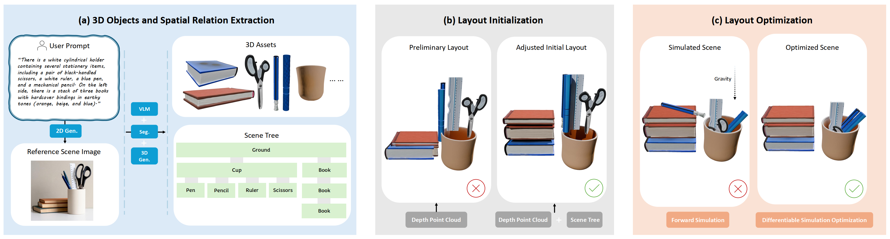

We introduce PAT3D, a physics-augmented text-to-3D scene generation framework that integrates vision-language models with physics-based simulation to produce physically plausible and intersection-free 3D scenes.
Given a text prompt, PAT3D generates 3D objects, infers spatial relations, and organizes them into a hierarchical scene tree. This structure is converted into initial simulation conditions, where a differentiable rigid-body simulator drives the scene toward static equilibrium under gravity.
A simulation-in-the-loop optimization step further improves physical stability and semantic consistency, yielding scenes that are directly usable for downstream simulation, editing, and robotic manipulation tasks.

An end-to-end demo video showing PAT3D scene generation and physically plausible results.
The examples below follow the asset folder structure from the baseline comparison set and show the text prompt and 3D outputs for each method. Blank GraphDreamer entries indicate out-of-memory failures with no result produced.
| Prompt | GraphDreamer | Blender-MCP | MIDI | Ours |
|---|
@inproceedings{
lin2026patd,
title={{PAT}3D: Physics-Augmented Text-to-3D Scene Generation},
author={Guying Lin and Kemeng Huang and Michael Liu and Ruihan Gao and Hanke Chen and Lyuhao Chen and Beijia Lu and Taku Komura and Yuan Liu and Jun-Yan Zhu and Minchen Li},
booktitle={The Fourteenth International Conference on Learning Representations},
year={2026},
url={https://openreview.net/forum?id=iIRxFkeCuY}
}